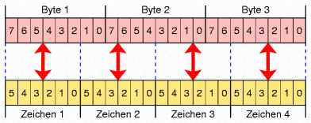
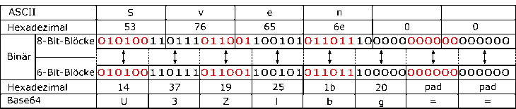

Sie erreichen die Funktion zur Base64-Codierung bzw. Base64-Decodierung über das Menü Einzelverfahren \ Tools \ Codierungen \ Base64-Codierung/Decodierung.
Die Base64-Codierung wird vor allem für Email-Anhänge verwendet.
Base64 ist eine Zeichencodierung, die dazu dient, binäre Daten in einem druckbaren Zeichenvorrat zu repräsentieren.
Die Base64-Codierung ist keine Verschlüsselung: Es wird kein Schlüssel verwendet, und wenn man denselben Text ein zweites Mal codiert, erhält man denselben Output.
Base64 codiert jeweils drei Byte Binärdaten (anhand der Base64-Codierungstabelle) so in vier Byte um, dass danach alle Zeichen druckbar bleiben. Dies bringt eine Vergrößerung der Gesamt-Datenmenge um 1/3 mit sich.
Wo kommt Base64 zum Einsatz?
Haupteinsatzgebiet ist der Email-Standard MIME, der zum Versenden und Empfangen von Emails mit beliebigen Text- und Binärdaten dient. Dies ist nötig, da das benutzte Sendeprotokoll SMTP Einschränkungen beim Datenversand hat:
Unbehandelte Binärdaten würden meist fehlerhaft übertragen werden, da Zeilenumbrüche nur zufällig auftreten und da auch der Zeichenvorrat größer ist.
Durch die Base64-Codierung liegt nur noch ein 6-Bit-ASCII-Zeichenvorrat vor. Außerdem ist Base64-Code nach den RFCs auf eine maximale Zeilenlänge von 76 Zeichen (standardmäßig 64 Zeichen) spezifiziert. Nach der Codierung ist es nun problemlos möglich, binäre Daten mit dem SMTP-Protokoll zu versenden.
Base64 kommt hauptsächlich für Anhänge von Emails zum Einsatz und ist für den Menschen nicht zu lesen. Für den Textteil der Email wird meist die Quoted-Printable Codierung verwendet, welche auch ohne Decodierung zumindest teilweise lesbar ist.
Wie funktioniert Base64?
Base64 arbeitet immer mit einem 24-Bit-Puffer (also 3 Byte), der in je 4 Teile à 6 Bit aufgeteilt wird.

Diese 6-Bit-Zeichen werden aus einer Tabelle ausgelesen, die nur aus den Zeichen „0-9“, „a-z“, „A-Z“ sowie „+“ und „/“ besteht. So ergeben sich aus je 3 Byte Klartext 4 Byte Base64-Code, was die Vergrößerung um 1/3 bewirkt.
Eine besondere Funktion erfüllt das Padding-Zeichen „=“: Es wird benötigt, wenn am Ende kein vollständiger 3-Byte Block vorliegt. Der fehlende Teil wird mit 0-Bits aufgefüllt und diese ergeben dann als Base64-Zeichen das „=“.
Die hier in CrypTool implementierte Base64-Codierung entspricht den RFCs 1421/2045. Sie ist kompatibel zu einer Base64-Codierung mit Hilfe von OpenSSL (mit der Ausnahme der Behandlung von unerlaubten Zeichen im Base64-codiertem Text). OpenSSL verhält sich den RFCs entsprechend und ignoriert Zeichen, die nicht zum Base64-Alphabet gehören. Die hier implementierte Codierung richtet sich nach einem Entwurfsdokument der IETF (Arbeitsgruppe zum Thema Internet-Standards) nach dem es einen Abbruch beim Auffinden illegaler Zeichen gibt, um zu verhindern, dass gezielt eingeschleuste illegale Zeichen für schädliche Zwecke, z.B. Hervorrufen eines Buffer-Overflows genutzt werden.
Beispiel: Codierung des Wortes „Sven“

Beispiel: Codierung eines kleinen Satzes
Klartext:
Sven fährt einen Ford Focus.
Base64-codierter Text:
U3ZlbiBm5GhydCBlaW5lbiBGb3JkIEZvY3VzLg==
Base64-Codierungstabelle
Vergleich von Base64- und UU-Codierung.
Quellen: